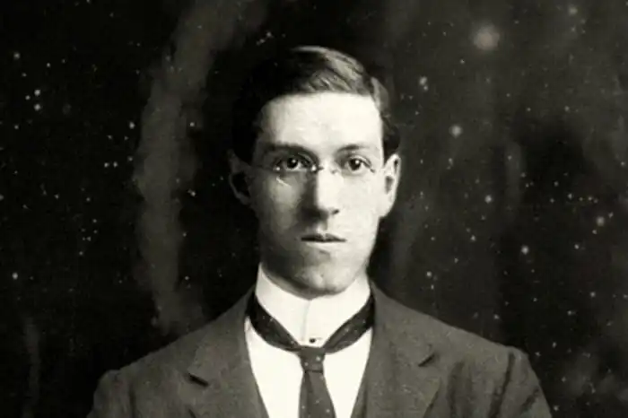

Говард Філіпс Лавкрафт народився 20 серпня 1890 року в Род-Айленді. Він був єдиною дитиною у Вінфілда Скотта Лавкрафта і Сари Сьюзен Філіпс Лавкрафт.
У 1893 році, коли Говарду було три роки, його батько пережив нервовий зрив, коли перебував у готелі в Чикаго, після чого був поміщений до психіатричної лікарні, де провів п'ять років, аж до своєї смерті 19 липня 1898.
Після смерті батька хлопчика ростила мати, дві тітки і, особливо, дід — Віппл Ван Б'юрен Філліпс. У діда була найбільша бібліотека в місті, що зіграло значну роль у формуванні читацьких пристрастей Говарда. Він рано почав читати і писати сам. З раннього дитинства Лавкрафт мав слабке здоров'я. За деякими свідченнями він страждав від посиленої чутливості до холоду і навіть від невеликого морозу він міг знепритомніти. Практично не маючи друзів, він більшість свого часу проводив у діда в бібліотеці. Але його інтереси не обмежувалися літературою, він серйозно займався хімією, астрономією, історією (особливо історією рідного штату і Нової Англії). Ще у шкільному віці самостійно почав видавати рукописні газети й часописи, що присвячував своїм науковим інтересам та дослідженням ("The Scientific Gazette" (1899—1907) і "The Rhode Island Journal of Astronomy" (1903—1907)). Розповсюджувалися вони в основному серед однокласників. В 1906 році його статтю з астрономії вперше публікує "The Providence Sunday Journal". Пізніше він стає постійним ведучим колонки у "The Pawtuxet Valley Gleaner", присвяченій астрономії. А згодом й у таких виданнях як "The Providence Tribune" (1906—1908), "The Providence Evening News" (1914—1918) та "The Asheville" (NC) "Gazette-News" (1915). 1904 року помирає дід Говарда. Разом з матір'ю, через фінансові труднощі, вони були змушені залишити маєток, в якому жили, та переїхати у тісну квартиру. Говард дуже переймався через утрату свого будинку. 1908 року в самого Говарда стався нервовий зрив, що змушує його залишити школу, так її й не закінчивши. Спроба вступити до Університету Брауна закінчується невдачею, що призводить до ще більш усамітненого способу життя Лавкрафта. З 1908 по 1913 Лавкрафт практично не виходив з дому, продовжуючи займатися астрономією і поезією. Лавкрафт почав видавати власний журнал "The Conservative" (1915—1923), в якому публікував свою поезію, а також статті та есе, написані як спеціально для цього видання, так і ті, що були надіслані в інші журнали. Всього виходить 13 випусків "The Conservative". Пізніше "Necronomicon Press" перевидадуть ці випуски разом з іншими працями Лавкрафта. Надалі Лавкрафт стає президентом і головним редактором UAPA. Вже маючи досвід написання художньої літератури раніше ("Звір у підземеллі" ("The Beast in the Cave", 1905) і "Алхімік" ("The Alchemist", 1908)) і тепер занурившись у світ аматорської прози, Лавкрафт знову береться за перо, вже як письменник-фантаст, — вперше з 1908 року. У 1917 успішно видаються "Склеп" ("The Tomb") і "Дагон" ("Dagon"). Тепер основним заняттям і захопленням автора стає саме проза, поезія і журналістика. У 1919 році нервовий зрив трапився вже з матір'ю Лавкрафта. Її також, як і його батька, помістили до клініки, звідки вона не виходила до самої смерті. Вона померла 24 травня 1921. Лавкрафт тяжко переживав смерть матері, але за кілька тижнів у його житті відбулася серйозна зміна — на конференції журналістів-аматорів у Бостоні 4 липня 1921 він зустрічає жінку, яка згодом стане його дружиною. Це була Соня Гафт Грін, єврейка українського походження, на сім років старша за самого Говарда. З першої зустрічі вони знаходять одне в одному багато спільного, і Лавкрафт часто відвідує її в Брукліні в 1922 році. Їхні стосунки не були секретом, і тому повідомлення про весілля 3 березня 1924 не виявилося несподіванкою для їхніх друзів. Втім це було повною несподіванкою для його тіток, яких він сповістив тільки в письмовому вигляді після того, як одруження вже відбулося. Лавкрафт переїжджає до дружини у Бруклін, тоді він вже заробляє як професійний письменник, публікуючи свої ранні роботи у "Weird Tales", а Соня тримає успішний магазин капелюшків на П'ятій авеню в Нью-Йорку. Але пізніше магазин розорюється, а Лавкрафт втрачає роботу редактора в "Weird Tales". До того ж, здоров'я Соні погіршується, і її кладуть у лікарню Нью-Джерсі. Першого січня 1925 Соня їде в Клівленд, щоб почати справу там, а Лавкрафт переселяється до однокімнатної квартири в одному з районів Брукліна під назвою Ред Гук (Red Hook). У цей час з-під його пера виходять такі твори як "Покинутий будинок" ("The Shunned House", 1924), "Кошмар Ред Гука" ("The Horror at Red Hook") і "Він" ("He") (обидва також 1924). На початку 1926 Лавкрафт задумує повернутися в Провіденс, за яким сумував весь цей час. У цей же момент його шлюб дає тріщину, і пізніше (у 1929) розпадається остаточно. Повернувшись 17 квітня 1926 в Провіденс, Лавкрафт не веде самотній спосіб життя, як це було в період з 1908 по 1913. Навпаки, він багато подорожує старовинними місцями (Квебек, Нова Англія, Філадельфія, Чарльстон) і плідно працює. У цей час він пише низку найкращих своїх творів, серед яких "Поклик Ктулху" ("The Call of Cthulhu", 1926), "На стрімчаках божевілля" ("At the Mountains of Madness", 1931), "Тінь з позачасся" ("The Shadow out of Time", 1934—1935). Водночас він веде активне листування як зі своїми старими друзями, так і з багатьма молодими авторами. Особливо тяжкими виявляються останні два-три роки його життя. У 1932 вмирає одна з його тіток, Міс Кларк, і Лавкрафт в 1933 переїжджає до кімнати в будинку 66 по Коледж Стріт разом зі своєю другою тіткою, Міс Ганвелл. Після самогубства Роберта Говарда, одного з найближчих його друзів по листуванню, Лавкрафт впадає в депресію. В цей же час прогресує захворювання, яке потім виявиться причиною його смерті, — рак кишківника. Взимку 1936—1937 хвороба настільки прогресує, що Лавкрафта кладуть в лікарню (Jane Brown Memorial Hospital) 10 березня 1937, де він і помирає п'ять днів по тому. Ввечері того ж дня газета "Providence Evening Bulletin", а 16 березня і "New York Times", опублікували некрологи. В першому з них зазначалося, що Лавкрафт продовжував робити письмові нотатки, поки міг тримати олівець.